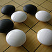

Welcome to the London City Go Club!

Welcome to the London City Go Club! We welcome Go players from all over London, and indeed from all over the World. We welcome players of all strengths, including complete beginners and will be happy to introduce you to this amazing game.
Our venue remains The Old Red Cow, 71 Long Lane, Barbican, EC1A 9EJ.We meet on Mondays upstairs at the The Old Red Cow pub from 5:30 pm until 10 pm or later.
The nearest tube is Barbican, but Farringdon station may be more convenient.
If you have any questions please e-mail Richard at .
We kindly ask players to buy a drink or some food as the pub keeps our equipment and does not charge us for the use of their facilities - nor do we make any charge for playing. Our continued existence depends upon the pub receiving a just reward for the use of their premises - these are difficult times for us all.
Alcoholic and non-alcoholic drinks are available - coke, juices etc. See also the Food menu and Wine list
Please do not bring your own food or drink.
24 Dec 2025: First meeting of 2026 is Monday 05 Jan
22 Jul 2024: We are grateful to have received a generous corporate donation from [*] Delphi Pool
The London City go club uses a Telegram Group for messages and announcements - please ask about this.
 在英国下围棋?
在英国下围棋?
 UK에서 바둑을 두고 싶으신가요?
UK에서 바둑을 두고 싶으신가요?